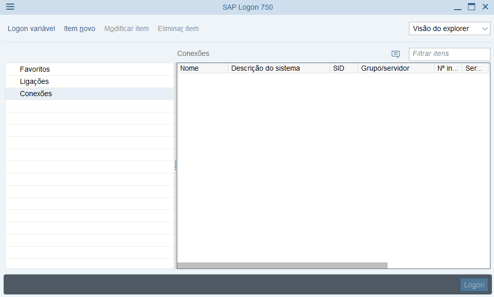

1. Abra o SAP
2. Clique no Menu e depois em Opções
3. Clique em Files de Configuração Locais e copie o endereço na caixa de texto
4. Cole esse endereço no explorer
5. Feito isso copie os arquivos que estão no endereço "\\192.168.58.10\instaladores\SAP\SAP 750\Sap logon entradas - 2019"
6. Agora cole na pasta aberta anteriormente com o endereço copiado do SAP e clique em Substituir os arquivos no destino